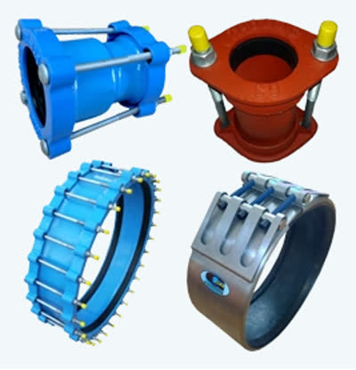

Xflow delivers pressure management, bulk meter upgrades and civil water infrastructure for municipal and private clients across the Western Cape — directed by a founder with 20+ years inside the City of Cape Town's own systems.
Xflow's core specialisms grew directly out of Sulaiman's municipal background. Everything else the team delivers — civil construction, bulk lines, drainage, roadworks — is built to support that same water-infrastructure work.
Core specialism, carried directly from Sulaiman's years inside the City of Cape Town's own network.
Large-scale metering infrastructure specified and installed for municipal and private clients.
Granular metering rollouts, supplied directly from Xflow's own KLINGER pipe products range.
Water efficiency and resilience infrastructure for municipal authorities, grounded in a completed engagement with the City of Cape Town itself.
View sector →Civil engineering systems and metering for private developments — delivered for Faircape Group, Apex Innovation and JOAT.
View sector →Xflow's confirmed next direction — evolving its offering into Internet of Things water technology as the space develops.
View sector →
Before founding Xflow in 2015, Sulaiman Achmat worked inside the City of Cape Town's own water systems for over 20 years. He founded Xflow to meet the city's growing demand for water efficiency and resilience — and built a team that now carries 40+ years of combined experience into every pressure management, metering and civil water project it takes on.
Pipe connection, repair and flow-control products — couplings, repair clamps, flange fittings and repair collars — held in-house rather than ordered in from a third party.




General & project enquiries and investor & partnership conversations both reach Xflow directly.